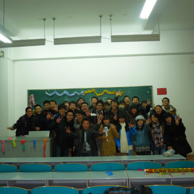
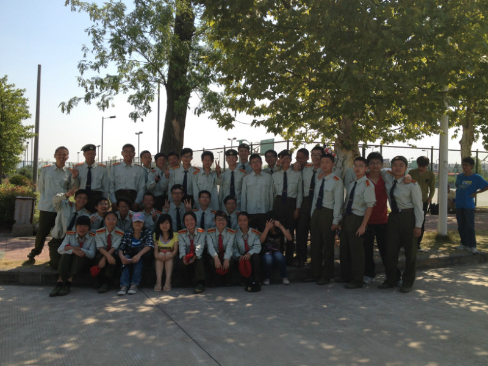
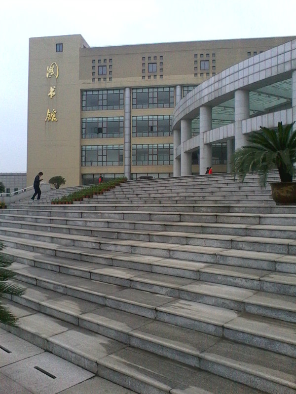
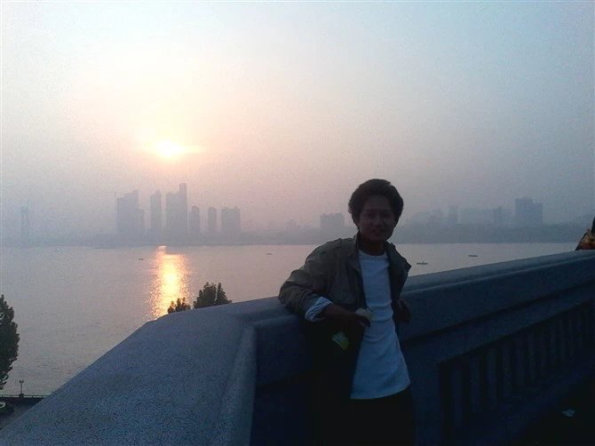
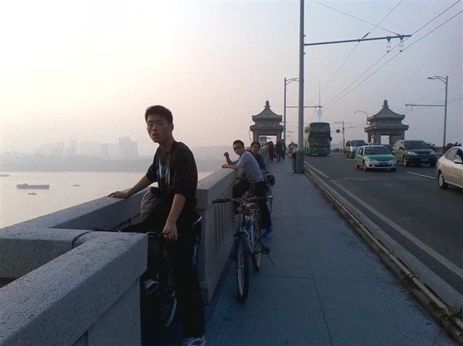

总有一些
你好哇！好久没写过你了，又被催促写日志了，浑浑噩噩过了半年，现在写总觉得在写“年志”，其实不是没空写， 而是没东西写，感觉我这半年是白过了，回头想想真是。。。白过了。。。但是，总有一些。。。总有一些事、人、物，来填补这段空白，见证你我存在。
大学军训不想多谈，累了不能睡，渴了不喝水，尿来了得憋着，闪着腰得撑着，大同小异。本着锻炼意志，却领悟了如何在夹缝中伸懒腰，掌握了反教官侦察，以及修仙求雨、百病随侵、君子动口等一系列高级技法。

大学课堂本应是一个值得的特写，可是我不得不说体会真不太多记得。额。。。大学课数本极少，老师不常见，旨在略懂不深究。故作为知识的好求者，对于问题虽好答，但师者不都喜欢提问，尽任鄙人求知若渴的眼神，盯着，盯着，盯着。。然后。。。闭着。。。睡着了。所以课堂一日，不赛图书馆一刻。反正真正体会课堂生活在大二、大三有的是机会，现在无需纠结，实在不行奔图书馆补呗！

既然说到图书馆，那么就不得不说下去。图书馆在本人所在校区，居中而显眼，倚沁心魔湖，受众教学楼众星捧月，得群宿舍楼称臣屈膝，是本区标志性建筑物，不但优雅高贵，而且高贵优雅，每天受难以计数的慕名者朝拜。诚然本人也是阿弥陀佛的虔诚滴图书馆粉丝，偶尔路过，打两斤酱油，亦是略受其益。平日太平，图书馆固然是闲情雅趣的主。可是一到半年两期知识饥荒期，本着“科考及格为进士，否则挂科补考重修”的圣旨天令，图书馆又多了项新的功能——锻炼。锻炼身体、锻炼意志，去晚了只能站着，冬天腿僵了脑袋不能僵；锻炼耐力、锻炼心性，积秒成分，积分成时，积时成天，积天成一、两个礼拜是不成问题的，故每至此时众生都心境禀然，两耳不闻窗外事，一心只读圣贤书。。。唉，真是强身养性的好地方，阿门！
寝室文化是大学生的标志性文化之一，一言以蔽之：宅。很久以前，杜甫就许愿曰：“安得广厦千万间，大宅天下寒士具欢颜！”千百年后，如愿以偿或胜之，一些非寒士都加入这一队列。哥也是宅过的爷，此中酸甜苦辣，喜乐悲痛，也是体会颇深。
鸟鸣山幽人依旧，总有一些事情在发生，一切才刚刚开始。。。。。。